Voici quelques ouvrages concernant les détails techniques de Concorde :
Supersonic Flight - 1971 - F.R. McKim - Longman physics topics - 21x16 64p
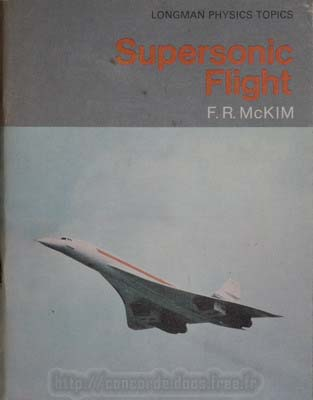
Cet ouvrage destiné aux collégiens Anglais explique très pédagogiquement
les grands choix technologique de Concorde. Beaucoup de photos et de schémas.
Bibliothèque de travail BT724 - 1971 - A.G. LAUBRY- ICEM pédagogie Freinet- 23x15 40p
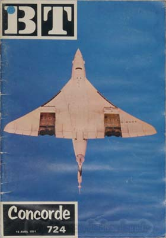
Autre ouvrage destiné aux collégiens, mais celui-ci en Français.
il présente succinctement Concorde et son développement.
Les photos sont en noir et blanc et certaines sont inédites.
Icare 164 & 165 - SNPL - 32x24 334p
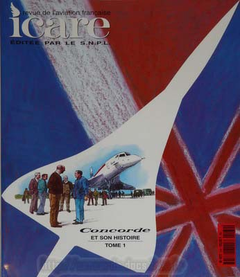 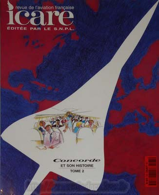
L'ouvrage de référence des données techniques du Concorde, en 2 tomes.
Beaucoup de textes, d'images et de schémas dans ces 2 ouvrages. A posséder absolument.
Flight International - 1969 - J.M. Ramsden - Iliffe Transport Publications ltd - 28x21 76p
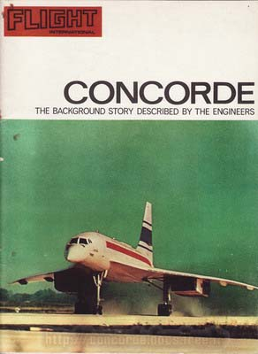
Ouvrage en Anglais, avec beaucoup de photos inédites en noir & blanc.
Plétore de détails techniques dans cet ouvrage qui intéressera principalement les professionnels de l'aéronautique.
Profile Aircraft n°250 - 1973 - Norman Barfield - Profile publication - 25x19 40p
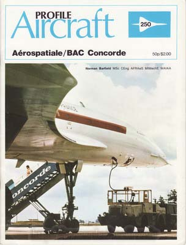
Revue Anglaise, avec de nombre de schémas, de photos inédites noir & blanc, et même de planches couleurs.
Un numéro de Profile Aircraft dédié au Concorde, qui décrit chapitre par chapitre les innovations techniques de Concorde.
Le vol supersonique - 1958 - Georges Lehr - Que sais-je? - 18x12 128p
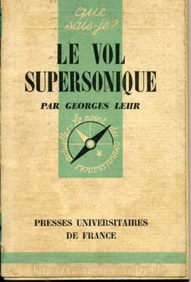
L'état des connaissances en aérodynamique supersonique, 4 ans avant le démarrage du programme Concorde.
Airlife's Airliners 14 - Günter Endres- 128p
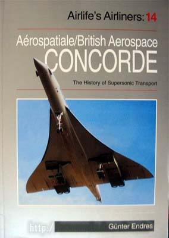
Livre technique sur Concorde.
Concorde from the flightdeck - 1990 - D. Leney & A. Burney -Ian Allan Ltd-24x17 80p
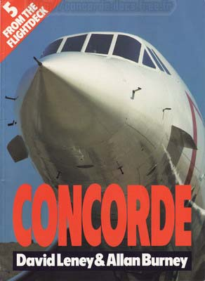
Le capitaine D. Leney a volé sur Concorde de 1977 à 1989, et nous relate en détail un vol New-York/Londres,
vu du cockpit. De nombreuses photos couleur ainsi qu'en noir et blanc.
Est aussi relaté depuis le cockpit l'incident de Sydney, quand une partie de
la dérive s'est arrachée en vol.
Ouvrage en Anglais, passionnant.
The Concorde stick and rudder book - 1990 - Mike Riley - 21x15 105p
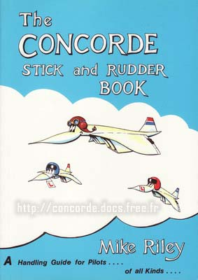
Le capitaine M. Riley a été pilote et instructeur Concorde. Dans ce livre en Anglais de petit format,
il nous explique avec pédagogie et humour les spécificités du pilotage de Concorde.
Avec force schémas griffonnés par l'auteur, cet ouvrage particulièrement atypique nous révèle
de nombreux secrets du pilotage de Concorde. Ne contient pas de photos.
Concorde - 1969 - Institut européen de Documentation Et de Coordination - 28x22 265p
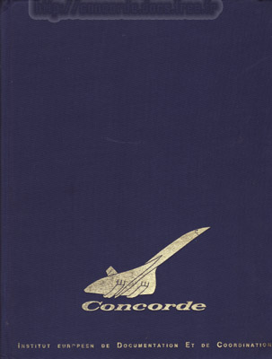
Avec ses 1,3 kg, ce livre décrit en détail sur plus de 200 pages Concorde, ses moteurs et ses systèmes.
Il est écrit en Français et en Anglais, et il contient de nombreuses photos noir & blanc,
ainsi que quelques photos couleur.
La rareté de cet ouvrage est dû à un tirage à part de 100 exemplaires nominatifs et de 100 exemplaires numérotés.